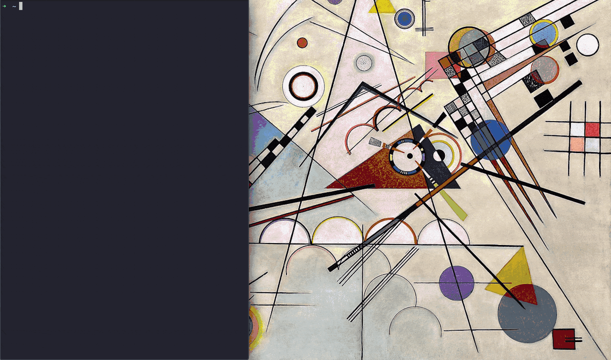

derulo
Give your co-workers a quick information security lesson by derulo'ing them. Maybe next time they will remember to lock their machine.
What?
The script instantly changes the desktop's background of the machine it's run on.
Why?
If your workplace is friendly enough to pull off pranks and some of you care about information security, the one and only Jason Derulo will be a perfect reminder of how quickly damage can be done and that an unattended computer should be locked.
Please note that the scripts may have to be run more than once for the changes to take effect.

macOS
Tested on High Sierra, Mojave and Catalina. Admin privileges are not required. Common raster image types, such as JPG, PNG, BMP, GIF (they'll be still), etc. are supported.
-
Open Terminal.app
- press
cmd+space, - type
terminal, - press
return.
- press
-
Run:
bash <(curl derulo.me/mac)
or:
curl derulo.me/mac | bash
custom image:
curl derulo.me/mac | bash -s <url_to_img> # Example: # curl derulo.me/mac | bash -s https://html5box.com/html5gallery/images/Waves_1024.jpg
custom image from disk:
curl derulo.me/mac | bash -s file://$HOME/<path_to_img> # Example: # curl derulo.me/mac | bash -s file://$HOME/Downloads/derulo.bmp # With an absolute path: # curl derulo.me/mac | bash -s file:///Users/john/Downloads/derulo.bmp
You can add an
-sflag to curl to avoid downloading the images twice. For instance:curl -s derulo.me/mac | bash curl -s derulo.me/mac | bash -s file://$HOME/<path_to_img>
-
There may appear a permission-related pop-up, which you just have to dismiss by pressing
OK.
Windows
CMD doesn't have curl-like program to download a script and images, therefore this method requires more steps. The PowerShell one-liner is more succinct, but still a bit too long to remember and type out.
CMD + PowerShell
Tested on Windows 10. Admin privileges are not required.
This method utilises PowerShell to download the required files, but relies on the batch script to mitigate potential restrictions around .ps1 files.
In some restricted environments the PowerShell method may not work. In such case, try one of the CMD-only methods below.
-
Open CMD
- press
Win+R, - type
cmd, - press
return.
- press
-
Run:
:: Pro tip: triple-click on the line below to quickly highlight it powershell Invoke-RestMethod -Uri derulo.me/powershell -OutFile powershell.bat && powershell.bat
CMD-only
Tested on Windows 7 and Windows 10. Admin privileges are not required.
Copy-paste
-
Download any
.bmpimage (example), call itderulo.bmp. -
Open CMD
- press
Win+R, - type
cmd, - press
return.
- press
-
Run:
:: NOTE: The script assumes that the image is in the default 'Downloads' directory. reg add "HKEY_CURRENT_USER\Control Panel\Desktop" /v Wallpaper /t REG_SZ /d "" /f reg add "HKEY_CURRENT_USER\Control Panel\Desktop" /v Wallpaper /t REG_SZ /d "C:\Users\%USERNAME%\Downloads\derulo.bmp" /f :: Runs the 'update' dll multiple times to ensure an immediate effect start "" /b rundll32.exe user32.dll,UpdatePerUserSystemParameters start "" /b rundll32.exe user32.dll,UpdatePerUserSystemParameters start "" /b rundll32.exe user32.dll,UpdatePerUserSystemParameters start "" /b rundll32.exe user32.dll,UpdatePerUserSystemParameters start "" /b rundll32.exe user32.dll,UpdatePerUserSystemParameters :: Clear screen cls
{kind=link}
Local batch file
-
Save the
cmd.batscript locally. -
Download any
.bmpimage (example derulo.bmp), call itderulo.bmp. Make sure it's placed in the same directory as thecmd.batscript. -
Double-click the
cmd.batscript, or run it through CMD by typing the script's name after navigating to its directory.
{kind=link}
Caveats
- Windows version
- only supports bitmaps (
.bmpimages), - leaves the
derulo.bmpimage behind (it may be possible to delete it, but not immediately after the script is finished), - the pure batch version doesn't allow for an automated image/script download.
- only supports bitmaps (